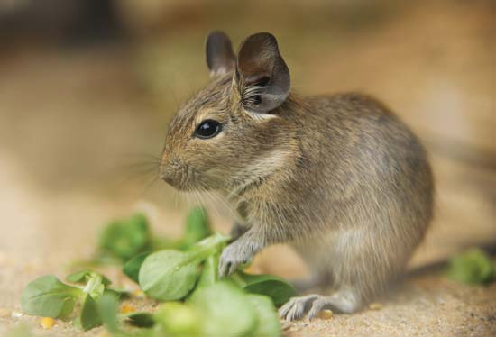
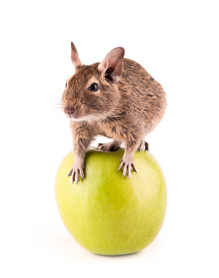

En liberté, l'octodon se nourrit de feuilles, d'écorces et de racines. C'est un herbivore strict c'est à dire qu'il ne devrait manger que et uniquement de la verdure. Il peut aussi de temps en temps manger un insecte qui a le malheur de se retrouver sur son chemin à ce moment ou des graines.
En élevage, il lui faut un régime strict. Les aliments comme les bouchons (graines, croquettes ou extrudés) ne conviennent pas à l'octodon. C'est un animal qui a besoin d'un régime sans graisse ni sucre or c'est ce que les industriels ont tendance à rajouter dans leur mélange.... Pour sa santé, il faut donc lui composer un mélange maison. Il n'a pas besoin de viande, car les aliments qu'il mange contiennent assez de protéines. C'est mieux de lui donner des légumes, qui sont plein de vitamines. Il lui faut du foin non poussiéreux et de l'eau propre (le biberon est conseillé).